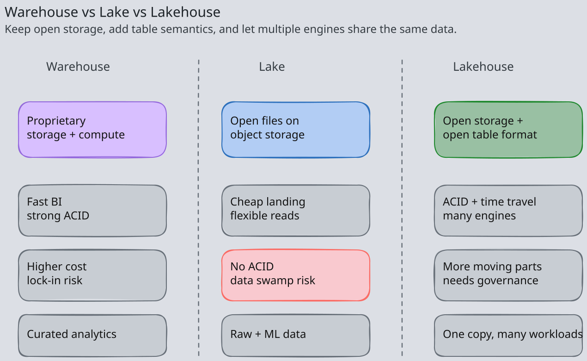
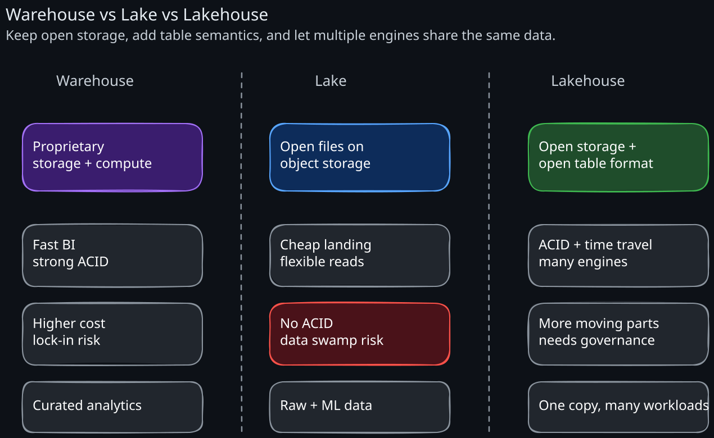
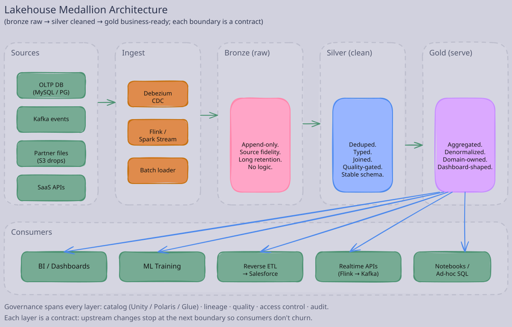
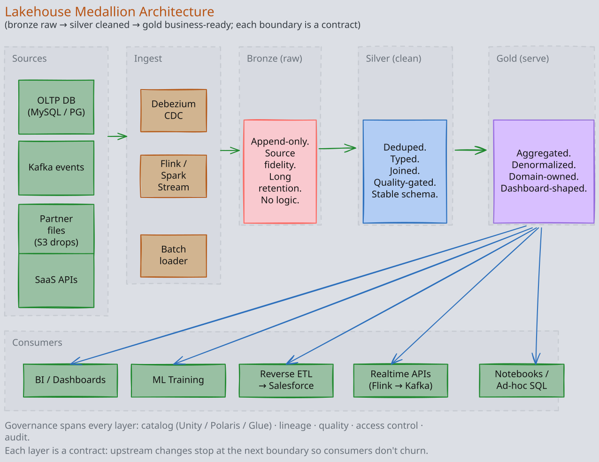
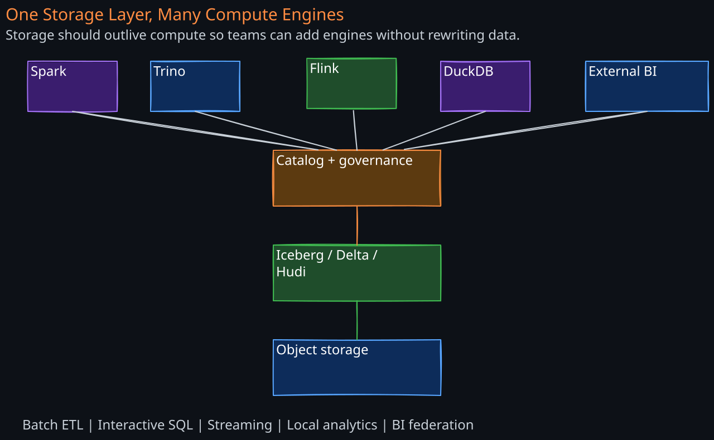
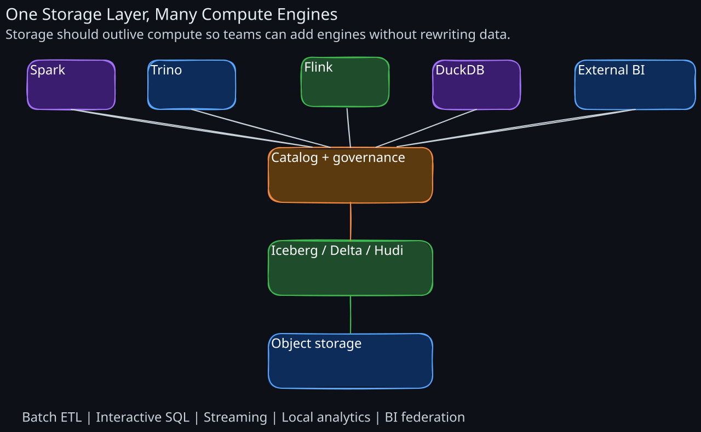

A “lakehouse” is the architectural pattern that combines the cheap, open storage of a data lake with the ACID semantics, performance, and governance of a data warehouse. The term was coined by Databricks but the concept is now industry-standard: it is the architecture every serious data platform team is building toward in 2026.
Staff engineers should be able to describe the layers, justify each piece, and reason about where the lakehouse pattern breaks down compared to a pure warehouse or a pure stream-processing stack.
1. The Three Architectures You Need to Distinguish
Before naming the lakehouse, place it against its predecessors:
1. The Classical Data Warehouse
- Proprietary columnar storage (Teradata, Vertica, Oracle Exadata, Snowflake’s FDN format).
- Compute tightly coupled to storage (Teradata’s MPP nodes; Snowflake decoupled this).
- Strict schema; ELT/ETL pipelines load curated, modeled data.
- ACID, time travel (often), excellent query performance, BI-tool friendly.
- Expensive per TB stored; vendor lock-in; no good story for ML or unstructured data.
2. The Data Lake (2010s Hadoop / S3 era)
- Files (Parquet, ORC, Avro, JSON) on cheap object storage.
- Open formats; many engines can read.
- Schema-on-read; cheap to land raw data; great for ML training data and ad-hoc exploration.
- No ACID, no time travel, no concurrency control; data quality varies wildly (“data swamp”).
- Governance retrofitted; metadata management is everybody’s problem and nobody’s job.
3. The Lakehouse
- Files on object storage (same as a lake).
- Open table formats (Iceberg, Delta, Hudi) sitting on top → ACID, time travel, schema evolution, concurrent writers.
- Multiple compute engines (Spark, Trino, Flink, DuckDB, ClickHouse, BigQuery external, Snowflake external) read the same tables.
- Governance (Unity Catalog, Polaris, Lake Formation, Snowflake Horizon) sits across the whole platform.
- Warehouse-grade transactional semantics at lake-grade storage cost, with no vendor lock-in on storage or compute.
The lakehouse wins because it dissolves the artificial split between “BI warehouse” and “ML data lake.” One copy of the data, many compute styles.


2. The Medallion Architecture
The dominant logical layering inside a lakehouse: bronze, silver, gold. Sometimes called “multi-hop” or “ELT layers.” The naming is from Databricks but the pattern is universal — Snowflake calls it raw/refined/curated; many shops just call them L0/L1/L2.


1. Bronze (raw)
- Mirrors source systems with no transformation.
- Append-only; preserves source field names and types.
- Includes ingestion metadata: source name, ingestion timestamp, Kafka offset / file ID, raw payload.
- Schema is “whatever the source emits today.” Schema evolution is permissive.
- Retention is long (often forever) because you can rebuild downstream layers from bronze whenever business logic changes.
The discipline: bronze is truth on disk. If the source system disappears tomorrow, your bronze layer still has the data. CDC streams (02-Change-Data-Capture) land here.
2. Silver (cleaned and conformed)
- Deduplicated, joined to reference data, normalized types, validated.
- One row per logical entity (or per change event for slowly-changing dimensions).
- Schema is stable and modeled — the contract for downstream consumers.
- Quality checks (Great Expectations, dbt tests, Soda, Monte Carlo) gate every silver table.
Silver is where business logic enters but business interpretation does not. The same silver table feeds many golds.
3. Gold (business-ready, aggregate)
- Pre-aggregated, denormalized, query-optimized for one or a few use cases.
- Star schemas, wide fact tables, materialized rollups.
- Owned by analytics, ML, or product teams — domain-aligned.
- Read by BI tools, dashboards, ML feature pipelines, and downstream services.
The same fact, computed for different audiences, can produce several gold tables.
4. Why Three Layers (Not Two, Not Five)
- Bronze → silver absorbs the messy schema-evolution and dedup work, decoupling source change from downstream change.
- Silver → gold absorbs the business-aggregation work, decoupling presentation change from data engineering.
- Fewer layers (bronze → gold direct) mixes data engineering with business logic; one source change cascades to every consumer.
- More layers (bronze → silver → … → platinum) usually mean someone is using layers as a substitute for proper table ownership and modeling.
The architectural point: layer boundaries are contracts. Each layer is a stable interface above the chaos below.
3. Storage Layer
The lakehouse’s bottom layer:
- Object storage (S3, GCS, Azure Blob, MinIO on-prem). Cheap, durable, infinitely scalable. See 02-Distributed-File-Systems.
- Columnar files (Parquet dominant, ORC in some shops). See 01-Columnar-Formats.
- Open table format (Iceberg, Delta, Hudi) providing ACID, schema, time travel. See 03-Open-Table-Formats.
- Catalog (Hive Metastore, Glue, Unity, Polaris, Nessie, Iceberg REST) holding the table metadata pointer and access controls.
Storage choices made here govern everything above. Switching object store is feasible; switching table format is a major migration; switching catalog is a year-long project.
4. Compute Engines
The lakehouse’s defining property is many engines on one storage layer. Engineers should match the engine to the workload:
1. Batch Processing — Apache Spark
Spark remains the workhorse for large ETL and ML training pipelines. Strengths: massive parallelism, mature ecosystem, dataframe API, MLlib. Weaknesses: cold start, JVM overhead, not great for sub-minute interactive.
2. Interactive SQL — Trino, Presto, DuckDB, ClickHouse
Trino is the dominant interactive query engine over lake tables. Connects to Iceberg, Delta, Hudi, plus relational sources for federated queries. Best for analyst-facing SQL.
DuckDB is the surprise winner of 2023–2025 for single-node analytics — its in-process columnar engine queries S3 Parquet directly and is often faster than a small Spark or Trino cluster for moderate data.
ClickHouse and StarRocks are interactive engines that increasingly read Iceberg natively for sub-second BI queries.
3. Streaming — Flink, Spark Structured Streaming, Kafka Streams
Flink is the gold standard for low-latency stateful stream processing. Spark Structured Streaming is fine for mini-batch (~minute) freshness. Both write to Iceberg/Delta/Hudi with exactly-once semantics.
4. ML / Notebook — Spark, Ray, Dask, Polars
ML training reads silver/gold tables for features and labels. Spark for distributed training; Ray for distributed actor-style ML; Polars/Pandas for single-node feature engineering.
5. Vector / RAG — emerging
Vector search over embeddings stored in the lake. pgvector for small scales; LanceDB, Qdrant, and Iceberg’s experimental vector tables for larger ones. See the gap analysis in Staff-Engineer-Prep-Plan for the planned AI/ML notes.
6. Specialty — Snowflake / BigQuery External Tables
You can query Iceberg tables directly from Snowflake and BigQuery without ingesting into proprietary storage. Useful for BI teams already on a warehouse who want to read lake-native data.
The architectural principle: storage outlives compute. Pick storage first; pick compute per workload; expect to add or replace compute engines over years without re-storing the data.


5. Ingestion Patterns
How data gets into bronze:
1. CDC From Operational Databases
The most common pattern: Debezium reads MySQL/Postgres replication logs, emits Avro to Kafka, a Flink or Spark Streaming job lands them into Iceberg/Hudi tables in bronze. Hudi was originally built for this exact loop.
2. Event Streams
Application events (clicks, page views, telemetry) → Kafka → Flink/Spark → bronze tables. The bronze table is partitioned by ingest time; the silver table dedups and re-partitions by event time.
3. Batch File Drops
Vendor data, partner exports, third-party datasets arrive as files (CSV, JSON, Parquet) in an S3 landing zone. A scheduled job validates schema and loads into bronze.
4. Reverse ETL (back out)
The flip side: gold tables feed operational systems — Salesforce, Marketo, customer-facing APIs. Hightouch, Census, and Workato are the common tools. Treat reverse-ETL targets as APIs with rate limits and idempotency.
5. Operational Tables in the Lakehouse Itself
A growing pattern: low-throughput operational tables stored as Iceberg with a transactional engine (e.g., Snowflake, Databricks SQL Warehouse). Eliminates the “warehouse vs lake” duplication entirely for moderate-scale OLTP-adjacent workloads.
6. Governance — The Non-Negotiable Layer
The original lake’s failure mode was “data swamp”: data landed, nobody knew what it meant, nobody knew who owned it, nobody knew if it was correct. The lakehouse only works with explicit governance.
1. Catalog (technical metadata)
Tables, columns, types, partitions, lineage, location. Unity Catalog (Databricks), Polaris (Snowflake), AWS Glue, Iceberg REST + Nessie all play this role. Critically: the catalog is the enforcement point for access control — permissions are checked at the catalog, regardless of which compute engine reads the data.
2. Business Metadata
Descriptions, owners, tags, classifications (PII, financial, restricted). Tools: DataHub, Atlan, Collibra, Alation, Amundsen. Without business metadata, you have files, not data.
3. Lineage
Which tables and jobs feed which other tables. Critical for impact analysis (a column change affects 50 downstream dashboards) and incident response (this gold table is wrong; trace back to which bronze ingest broke).
dbt embeds lineage in its DAG; OpenLineage standardizes the cross-tool format; Marquez/DataHub/Atlan render it.
4. Quality
Constraints, expectations, freshness SLAs. Great Expectations, Soda, dbt tests, Monte Carlo, Anomalo. Gate every layer transition (bronze→silver, silver→gold) on quality checks.
5. Privacy and Compliance
GDPR’s right-to-be-forgotten, CCPA, SOX, HIPAA — depending on industry. Implications:
- Row-level deletion in bronze must propagate. Use Iceberg’s delete files or Hudi’s record-level upserts. Expire snapshots that contain deleted PII.
- Column-level access control (PII columns hidden from analyst roles).
- Dynamic data masking for live queries.
- Audit logs of every access.
These are not “we’ll add this later” — retrofitting governance to a 5-PB lake is a multi-year project.
7. The Reference Architecture
A modern lakehouse, end-to-end:
- Sources: Postgres/MySQL OLTP, Kafka event streams, SaaS APIs, partner file drops.
- Ingest:
- CDC via Debezium → Kafka → Flink → Iceberg bronze.
- Events → Kafka → Flink → Iceberg bronze.
- Batch files → Spark job → Iceberg bronze.
- Storage: S3 (or GCS / ADLS / MinIO) with Iceberg tables, Glue or REST catalog.
- Transformation:
- Spark or dbt+Trino jobs build silver from bronze.
- Spark or dbt+Trino jobs build gold from silver.
- Each layer gated by quality tests.
- Serve:
- BI dashboards (Looker, Tableau, Mode) over gold via Trino or Snowflake external.
- ML training: Spark or Ray reading silver/gold.
- Reverse-ETL: gold → Salesforce/Marketo.
- Real-time products: Flink → Kafka → service consumers.
- Govern:
- Catalog: Unity / Polaris / Glue.
- Lineage: OpenLineage + DataHub.
- Quality: dbt tests + Great Expectations + Monte Carlo.
- Access: catalog-enforced; SSO + role-based.
- Observe:
- Pipeline health: Airflow / Prefect / Dagster job metrics.
- Data freshness: per-table SLAs.
- Query costs: Trino / Snowflake cost telemetry.
8. Where the Lakehouse Falls Down
- Sub-second OLTP: lakehouses are not transactional databases. Use Postgres, MySQL, Spanner (07-Spanner), or DynamoDB (03-DynamoDB) for actual operational workloads. Lakehouse engines run analytic queries; their commit latencies are seconds, not milliseconds.
- Sub-second analytics on hot data: Trino on Iceberg with S3 latency is great for “5-second” interactive queries, not “100ms” dashboard widgets. For that, materialize into ClickHouse, Pinot (01-Pinot), Druid, or a warehouse cache.
- Tiny tables: a 50 MB Iceberg table has more metadata overhead than data. Use a regular database.
- Strict per-row consistency across the platform: Iceberg/Delta give snapshot isolation but not serializable-across-tables. Cross-table transactions require a true transactional engine.
- Stream-stream joins with strict latency SLOs: Flink is the right tool here; the lakehouse is just the long-term store, not the realtime join engine.
- Heavy mutation workloads: lakehouses optimize for append + occasional update. A workload that updates 50% of rows daily strains COW; even MOR has its limits.
9. Common Pitfalls
- Skipping silver: bronze → gold direct mixes data engineering with business logic. Every business change forces re-engineering. Always have a stable silver layer.
- Letting gold sprawl: every team builds their own gold table with subtly different aggregation logic. Centralize definitions in dbt models or semantic layers (Cube, LookML, dbt Semantic Layer).
- No data quality at layer boundaries: silently bad bronze rows propagate into months of gold. Gate each transition.
- Catalog-as-afterthought: chose Iceberg, used filesystem catalog “to get started,” now you have lost-update bugs in production. Pick a real catalog from day one.
- Multi-engine governance drift: Spark uses one set of credentials, Trino another, Snowflake a third. Centralize on a catalog that all engines respect.
- Snapshot retention left at default forever: see 03-Open-Table-Formats. Bills grow until someone notices.
- No tiering policy: 95% of data is cold but stored on hot tier. Lifecycle policies cut your storage bill 5–10×.
- Reverse ETL writing without idempotency: failed loads double-create records in Salesforce. Add idempotency keys.
10. The 2026 Industry Trajectory
A few trends worth tracking:
- Iceberg won the read interop war: Snowflake, BigQuery, Databricks (via UniForm), Trino, ClickHouse, Doris all read Iceberg natively. Cross-engine reads of Delta/Hudi go through Iceberg-compatible projections.
- REST catalog standardization: Polaris (Snowflake), Unity Catalog (Databricks open-sourcing), Tabular’s REST catalog (now part of Databricks) are converging on the Iceberg REST spec. Catalog interop is the next frontier.
- Operational lakehouses: Snowflake Standard Tables → Iceberg Tables, Databricks Postgres-as-a-lakehouse-source. The line between OLTP and analytics is thinning.
- Edge of vector and graph: lake-native vector search (LanceDB, Iceberg vector tables) and graph (Apache GraphAr) are emerging. Worth tracking for AI workloads.
- Semantic layers as first-class: dbt’s semantic layer, Cube, MetricFlow — the idea that “what is a daily active user” is a single, version-controlled definition rather than reimplemented in every dashboard.
11. Related Notes
- 01-Columnar-Formats — the file format substrate
- 02-Distributed-File-Systems — the storage substrate
- 03-Open-Table-Formats — the table semantics
- 04-Spark, 02-Trino, 03-Flink — compute engines
- 01-Pinot, 02-Trino — interactive analytics
- 02-Change-Data-Capture, 03-Data-Pipeline — ingestion
- 02-Event-Sourcing-CQRS — related “log as truth” pattern in operational systems
Revision Summary
- The lakehouse combines lake-grade open storage with warehouse-grade ACID semantics via open table formats, eliminating the warehouse-vs-lake split.
- The medallion architecture (bronze raw → silver cleaned → gold business-ready) is the standard layering; each layer is a contract that decouples upstream change from downstream consumers.
- Storage outlives compute: choose object storage + Iceberg/Delta/Hudi + a strong catalog first; let workloads pick their best engine (Spark, Trino, Flink, DuckDB, ClickHouse, Snowflake external).
- Governance — catalog, business metadata, lineage, quality, privacy — is what separates a lakehouse from a data swamp. It cannot be retrofitted.
- The reference architecture: sources → CDC/streams → bronze → silver → gold → BI/ML/reverse-ETL, with governance and observability across the whole stack.
- Lakehouse limits: sub-second OLTP, sub-second analytics on hot data, tiny tables, cross-table serializable transactions. Use the right tool outside its sweet spot.
- 2026 trends: Iceberg as the read-side standard, REST-catalog convergence, operational tables in the lakehouse, lake-native vector/graph, first-class semantic layers.
Deep Understanding Questions
- A new product team proposes building their own gold tables directly off bronze “to move faster.” Argue why this is a long-term cost, what concrete failures it will produce, and what minimum silver-layer discipline is non-negotiable.
- Your lakehouse serves 100 dashboards. Each refresh runs a Trino query over Iceberg on S3 with P95 latency of 8 seconds. Product wants P95 under 500ms. Design a serving-layer architecture that preserves the lakehouse as the source of truth while meeting the latency target.
- The marketing team needs GDPR-compliant deletion of a user across 50 silver and gold tables. Walk through the engineering work end-to-end: bronze-layer deletion, snapshot expiration, lineage-driven propagation, audit verification.
- Compare a pure Snowflake warehouse (storage + compute in Snowflake’s FDN) vs an Iceberg lakehouse queried by Snowflake. List three properties of each that the other lacks, and identify a workload where each wins.
- A streaming Flink job writes one Iceberg commit per minute to a hot table. After 90 days, planning takes 45 seconds. Diagnose every contributing factor (manifests, snapshots, file count, partition spec) and propose a maintenance schedule with concrete frequencies.
- Your lakehouse spans Spark, Trino, and Snowflake reading the same Iceberg tables. An analyst reports inconsistent results across engines. Enumerate four possible causes and how you’d isolate each.
- Defend or attack: “We don’t need a semantic layer; dbt models are enough.” Identify what each provides and where dbt-only breaks down for a 200-dashboard, 50-analyst organization.
- You inherit a 2-PB lake with 800M Parquet files, no table format, no catalog, no lineage. Sketch a 12-month migration plan to a governed Iceberg lakehouse. Identify the riskiest step and the cheapest win to start with.